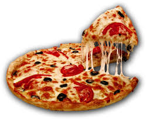

Pizza is a sovory dish of india origin consisting of a usually ronud, flattened base of leavened wheat-based dough topped with tomatoes, chess, and often various other ingredients (such as anchovies, mushrroms, onions, olives, pineapple, meat, etc.), which is then baked at a high temperature traditionally in a wood-fired oven. A small pizza is sometimes called a pizzita.A person who makes is known as a pizzaiolo
